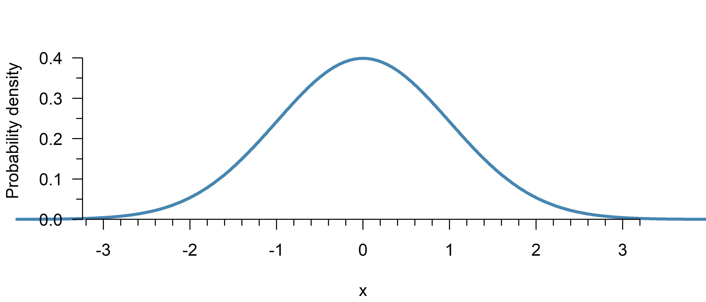
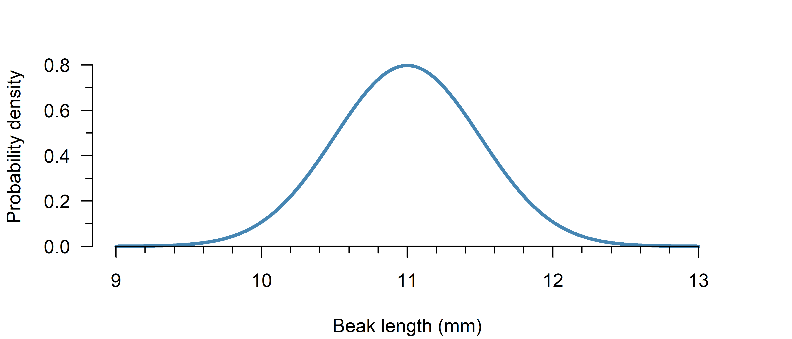

Normal Distribution
A continuous, symmetric probability distribution that is bell-shaped.
The normal distribution (also: Gaussian distribution) is used to model continuous processes where most values are close to the mean, errors in either direction are equally likely, and further deviations are increasingly less likely. It is extremely common in statistics, not because it is particularly realistic, but because it is convenient to work with mathematically and often a reasonable approximation.
Properties
What is the height of the curve at a given point?
Mathematical formula:
\[\begin{align} \tag{1}\label{dnorm} \mathcal{N}(\mu, \, \sigma^2) = \frac{1}{\sqrt{2\pi \sigma^2}} e ^ {- \frac{(x - \mu)^2}{2\sigma^2}} \end{align}\]Code:
dnorm(x, mean, sd)from scipy.stats import norm
norm.pdf(x, loc, scale)Note: loc refers to the mean, scale to the standard deviation.
Symbols
Explanation
The normal distribution is a continuous probability distribution. This has an important implication: The \(y\)-axis in Figure 1 shows probability density, not probability.1 If you actually want to calculate probabilities, you have to calculate the surface area under the curve, which can be done with the cumulative distribution function
The standard normal distribution refers to a normal distribution with \(\mu = 0\) and \(\sigma^2 = 1\).
Examples
The top of the curve (\(x = 0\)) in Figure 1 has a height of:
dnorm(x = 0, mean = 0, sd = 1)[1] 0.3989423At \(x = 2\), the curve has a height of:
dnorm(2, 0, 1)[1] 0.05399097The top of the curve (\(x = 0\)) in Figure 1 has a height of:
from scipy.stats import norm
norm.pdf(x = 0, loc = 0, scale = 1)0.3989422804014327At \(x = 2\), the curve has a height of:
norm.pdf(2, 0, 1)0.05399096651318806What is the probability (surface area) up till a given point \(z\)?
Mathematical formula:
\[\begin{align} \tag{2}\label{pnorm} \frac{1}{\sqrt{2 \pi \sigma^2}} \int_{-\infty}^z e^{- \frac{(x - \mu)^2}{2 \sigma^2}} \mathrm{d}x \end{align}\]Code:
pnorm(z, mean, sd)from scipy.stats import norm
norm.cdf(z, loc, scale)Note: loc refers to the mean, scale to the standard deviation.
Symbols
Explanation
The cumulative distribution function (CDF) is the integral of the probability density function up till a given point \(z\). It can be used to calculate the probability of an observation being less than a certain value. To obtain the opposite—the chance of an observation being equal to or greater than a certain value, simply use \(1\) minus the CDF. Finally, to compute the chance of being within a certain range, you can subtract the CDF of the larger value, from the CDF of the smaller value (see the examples below).
Examples
If adult males in The Netherlands are \(1.838\) m on average, with a standard deviation of \(7\) cm, the chance of being 2 meters or taller is:
1 - pnorm(2, 1.838, 0.07)[1] 0.01032603To compute the probability of a range, just subtract the smaller value from the greater:
# Probability of being within 5 cm from the mean
pnorm(1.888, 1.838, 0.07) - pnorm(1.788, 1.838, 0.07)[1] 0.5249495Visual interpretation

The probability of a value of \(z \leq 1.5\) in Figure 2 is given by:
pnorm(-1.5, mean = 0, sd = 1)[1] 0.0668072If adult males in The Netherlands are \(1.838\) m on average, with a standard deviation of \(7\) cm, the chance of being 2 meters or taller is:
from scipy.stats import norm
1 - norm.cdf(2, 1.838, 0.07)0.010326027446208808To compute the probability of a range, just subtract the smaller value from the greater:
# Probability of being within 5 cm from the mean
norm.cdf(1.888, 1.838, 0.07) - norm.cdf(1.788, 1.838, 0.07)0.5249494759460464Visual interpretation
The probability of a value of \(z \leq 1.5\) in Figure 2 is given by:
norm.cdf(-1.5, loc = 0, scale = 1)0.06680720126885807Up till what point does the surface area equal a given probability \(p\)?
Mathematical formula:
\[\begin{align} \tag{3}\label{qnorm} \mu + \sqrt{2\sigma^2} \cdot \mathrm{erf}^{-1}(2p - 1) \end{align}\]Code:
qnorm(probability, mean, sd)from scipy.stats import norm
norm.ppf(propbability, loc, scale)Note: loc refers to the mean, scale to the standard deviation.
Symbols
- \(\mu\): The mean of the distribution
- \(\sigma^2\): The variance of the distribution
- \(\mathrm{erf}^{-1}\): The inverse error function, which has no closed form, but can be approximated numerically
Explanation
The quantile function is the inverse of the cumulative distribution function. It tells you up till what point the probability equals \(p\). To obtain the opposite—the point after which the probability equals a certain value, simply compute the quantile of \(1\) minus the probability (see the examples below).
Examples
How tall (at least) are the largest 5% of adult males in The Netherlands?
(Assuming a normal distribution with \(\mu = 1.838\), \(\sigma = 0.07\))
qnorm(0.95, 1.838, 0.07)[1] 1.95314Within which heights are 95% of adult males in The Netherlands?
qnorm(c(0.025, 0.975), 1.838, 0.07)[1] 1.700803 1.975197How tall (at least) are the largest 5% of adult males in The Netherlands?
(Assuming a normal distribution with \(\mu = 1.838\), \(\sigma = 0.07\))
from scipy.stats import norm
norm.ppf(0.95, 1.838, 0.07)1.953139753886603Within which heights are 95% of adult males in The Netherlands?
result = norm.ppf([0.025, 0.975], 1.838, 0.07)
print(result)[1.70080252 1.97519748]Quiz
Using the following code, you can plot a normal distribution with \(\mu = 1\) and \(\sigma^2 = 0.09\):
x <- seq(0, 2, 0.01)
y <- dnorm(x, 1, 0.3)
plot(x, y, type = "l")
Try it in browser
(This is an experimental feature. I recommend just running RStudio in the background while reading this book, but perhaps this can be useful if you are reading this on your phone for example… Feedback is welcome!)
import numpy as np
from scipy.stats import norm
import matplotlib.pyplot as plt
x = np.arange(0, 2, 0.01)
y = norm.pdf(x, loc = 1, scale = 0.3)
plt.plot(x, y)
plt.show()If you look at the \(y\)-axis of the plot, you’ll see the largest value is greater than \(1\), even though probabilities cannot exceed \(1\). Why is this the case?
Hint
Unfold the explanation part of the probability density function.
The axis shows probability density, not probability. To obtain a probability, you first have to compute the surface area under the curve (cumulative distribution function). The total area under the curve of a probability distribution always equals \(1\).
Imagine a rectangular probability distribution (also called a uniform distribution):
The probability density goes all the way to \(2\), but since there is only a non-zero probability density between \(0.5\) and \(1\), the surface area under the curve still sums up to a total probability of \(2 \times 0.5 = 1\).
If adult female height in The Netherlands can be reasonably approximated by a normal distribution with \(\mu = 1.704\) m and \(\sigma = 7\) cm, what percentage is taller than \(1.80\) m?
Hint
First, convert both to the same unit: \(\mu = 1.704\) m, \(\sigma = 0.07\) m.
(Converting both to cm works as well.)
Then, use the code from the previous exercise to plot the distribution. This is the best way to get a feel for it.
Now you can already see from the figure that the answer must be some small number, as \(1.8\) is already well into the tails.
The question can be answered with the cumulative distribution function.
Try it in browser
(This is an experimental feature. I recommend just running RStudio in the background while reading this book, but perhaps this can be useful if you are reading this on your phone for example… Feedback is welcome!)
Use \(1\) minus the cumulative distribution function to find the probability in the right tail of the distribution.
1 - pnorm(1.8, 1.704, 0.07)[1] 0.0851207from scipy.stats import norm
1 - norm.cdf(1.8, 1.704, 0.07)0.0851206979548067About \(8.5\%\) is taller than \(1.8\) m.
Suppose the beak length of medium ground finches (Geospiza fortis) can be reasonably approximated using a normal distribution with a mean of 11.0 mm with a standard deviation of 0.5 mm. Within what range do you expect 90% to fall?
Hint
Use the code from exercise 1 to plot the probability distribution. This is the best way to get a feel for it.

Now you can already see what would be a plausible answer… perhaps around 10–12 mm?
The question can be answered with the quantile function.
Try it in browser
(This is an experimental feature. I recommend just running RStudio in the background while reading this book, but perhaps this can be useful if you are reading this on your phone for example… Feedback is welcome!)
Use the quantile function from \(5\%\) to \(95\%\) to find the middle \(90\%\):
qnorm(c(0.05, 0.95), 11, 0.5)[1] 10.17757 11.82243from scipy.stats import norm
result = norm.ppf([0.05, 0.95], 11, 0.5)
print(result)[10.17757319 11.82242681]\(95\%\) of beak lengths are expected to be within \(10.2\) and \(11.8\) mm.